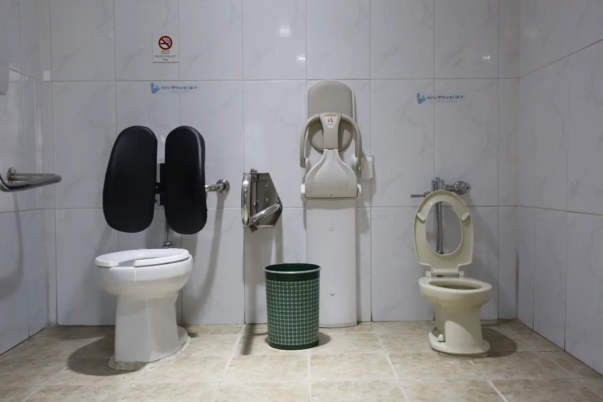
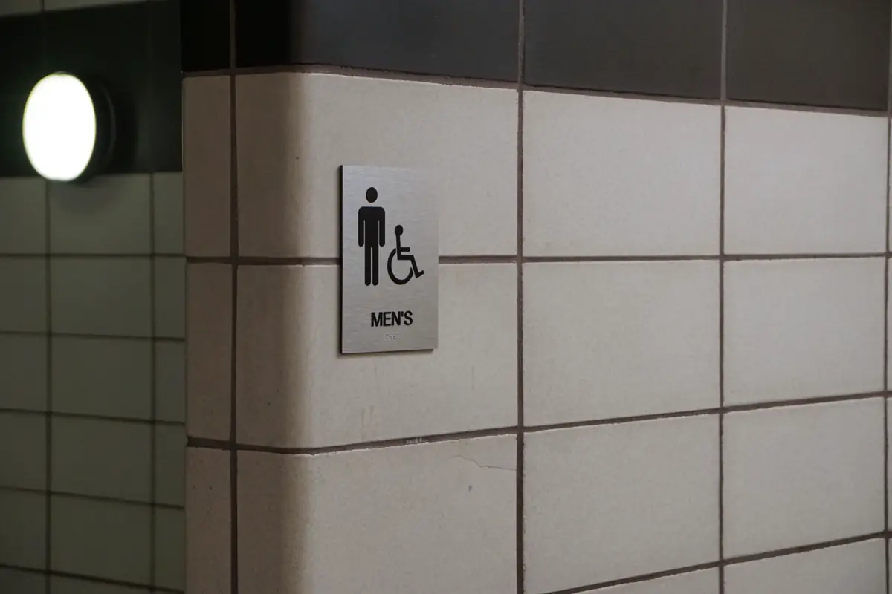
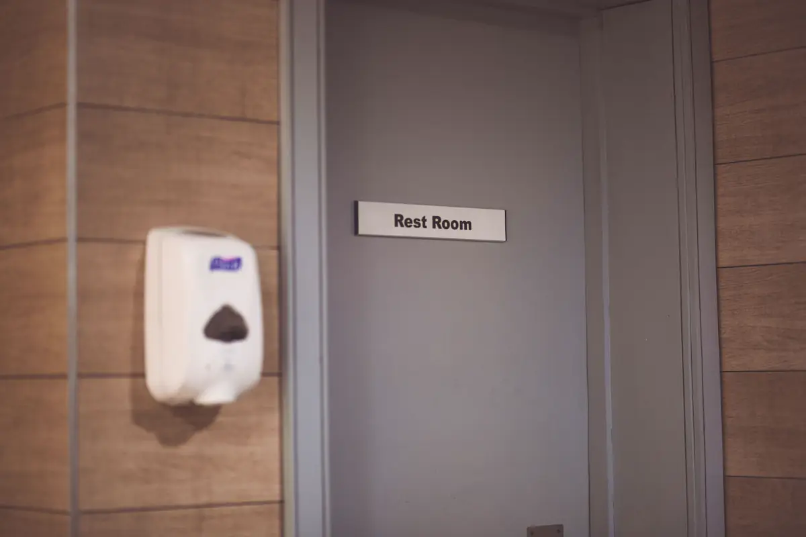

Por que tanto banheiro "adaptado" é reprovado
O sanitário é o item que mais aparece nas não conformidades de acessibilidade na Grande Vitória. O motivo é quase sempre o mesmo: a obra foi feita "de olho", com barra comprada pronta e bacia comum, e alguns centímetros fazem a cadeira de rodas não girar ou a transferência não acontecer. Este guia reúne as medidas de referência da ABNT NBR 9050 (versão de 2020) — use-o para conferir; para o laudo com ART, veja o laudo de acessibilidade NBR 9050.
Equipe técnica pronta para atender toda a demanda em Vitória, Vila Velha, Serra, Cariacica e região: o orçamento, o agendamento e o acompanhamento ficam centralizados na Axial Engenharia, do primeiro contato à entrega do documento.

Medidas de referência
| Item | Referência NBR 9050 |
|---|---|
| Área de manobra | Círculo de 1,50 m de diâmetro para giro de 360° da cadeira de rodas |
| Área de transferência | Módulo de 0,80 × 1,20 m ao lado da bacia, livre de obstáculos |
| Altura da bacia | De 0,43 a 0,45 m sem o assento; com assento, até 0,46 m |
| Barras de apoio | Barras na parede lateral e na do fundo, com comprimento mínimo de 0,80 m, a 0,75 m do piso |
| Lavatório | Superfície entre 0,78 e 0,80 m de altura, sem coluna, com área livre para aproximação frontal |
| Torneira | Acionamento por alavanca, sensor ou similar |
| Porta | Vão livre mínimo de 0,80 m, com puxador horizontal no lado interno |
| Alarme | Dispositivo de sinalização de emergência ao lado da bacia, a 0,40 m do piso |
| Quantidade | Em edificação de uso coletivo, sanitário acessível em cada pavimento que tenha sanitários, na proporção da norma |
Os valores acima são os mais usados e servem de conferência. Detalhes de posição — distância das barras à bacia, alcance de acessórios, box de chuveiro com banco — estão nas figuras da norma e são verificados item a item no laudo.

Checklist para conferir na obra
- Com a porta fechada, cabe um círculo de 1,50 m livre?
- Ao lado da bacia, há 0,80 × 1,20 m livres para a cadeira encostar?
- A bacia está entre 0,43 e 0,45 m sem o assento?
- As barras estão na lateral e no fundo, a 0,75 m do piso, com 0,80 m ou mais?
- O lavatório não tem coluna e fica entre 0,78 e 0,80 m?
- A porta tem 0,80 m de vão livre e puxador horizontal por dentro?
- Há alarme de emergência ao alcance de quem caiu, a 0,40 m do piso?
- Espelho, papeleira, saboneteira e cabide estão ao alcance de quem está sentado?
- A porta tem sinalização com o símbolo de acesso?

Erros que mais aparecem
Barra fixada no lugar errado ou curta demais, bacia comum alta ou baixa demais, lavatório de coluna, porta de 0,70 m, sanitário usado como depósito — e o clássico: banheiro perfeito no segundo andar, sem rampa ou elevador para chegar até ele. Em clínicas, escolas e hotéis, o sanitário costuma ser o item de maior peso no plano de adequação.
Perguntas frequentes sobre banheiro acessível
Qual a medida mínima de um banheiro acessível?
Não há uma medida única de ambiente: o banheiro precisa comportar a área de giro de 1,50 m de diâmetro, a área de transferência de 0,80 × 1,20 m ao lado da bacia e o lavatório com aproximação frontal. O tamanho final depende do arranjo.
Qual a altura da barra de apoio no banheiro acessível?
As barras horizontais ficam a 0,75 m do piso, com comprimento mínimo de 0,80 m, na parede lateral e na do fundo da bacia, conforme a NBR 9050.
Qual a altura da bacia sanitária acessível?
Entre 0,43 e 0,45 m do piso, sem o assento. Com o assento, a altura não deve passar de 0,46 m.
Banheiro acessível precisa de alarme?
Sim. A NBR 9050 prevê dispositivo de sinalização de emergência ao lado da bacia, a 0,40 m do piso, para ser alcançado por quem caiu.
Quem pode atestar que o banheiro está conforme?
Engenheiro ou arquiteto habilitado, por meio de laudo de acessibilidade com ART ou RRT, com medições e fotos de cada item.
Conferência de sanitários na Grande Vitória
Laudo e conferência de banheiro acessível em toda a região:
O banheiro já foi feito e você quer conferir?
Mande fotos com uma trena aparecendo. Retornamos com o que precisa de ajuste e o valor do laudo.